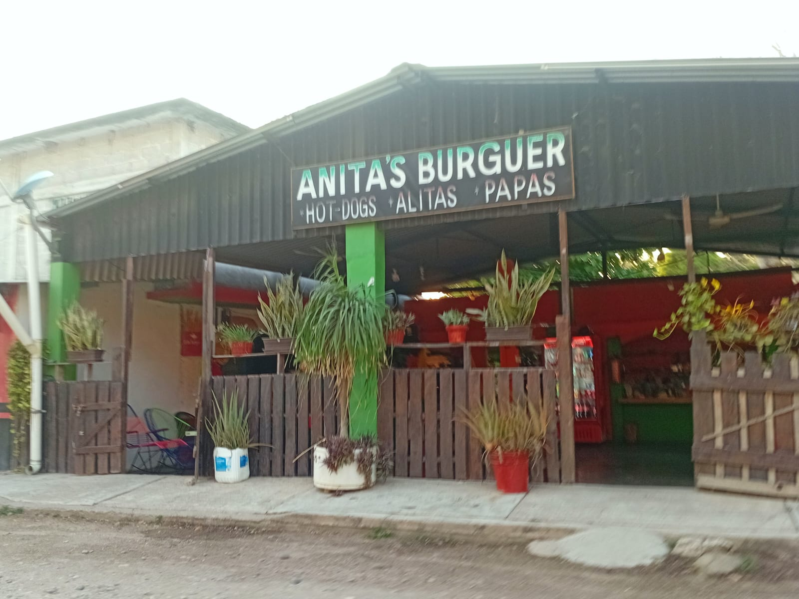
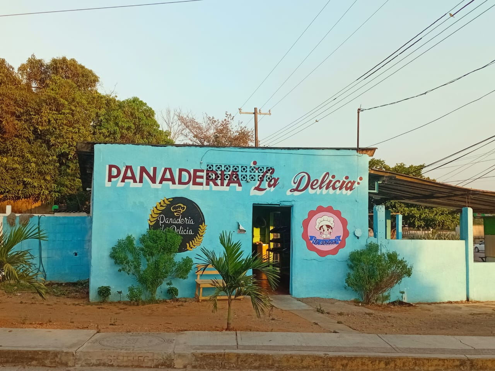
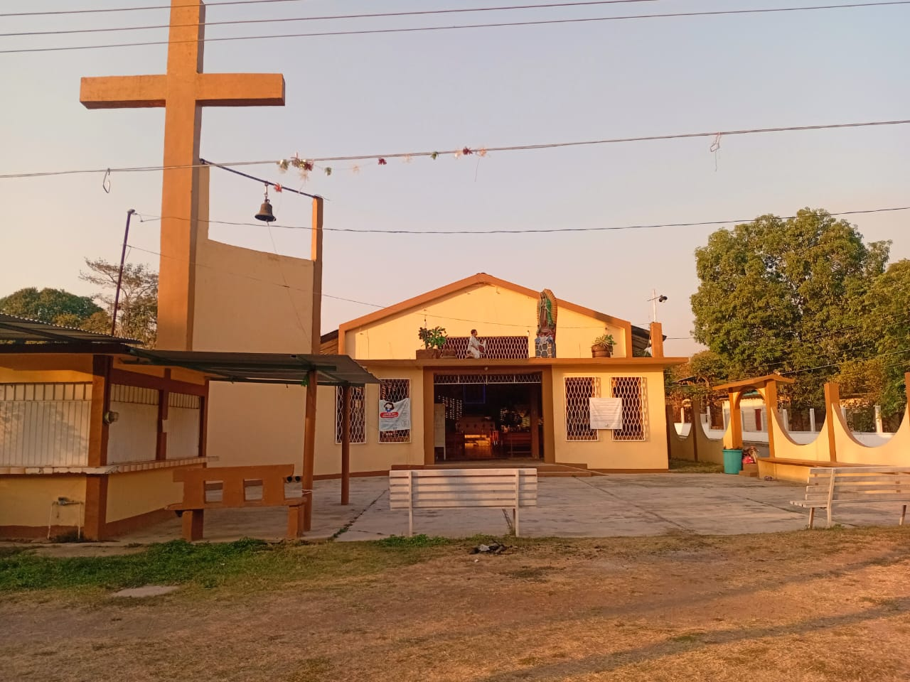
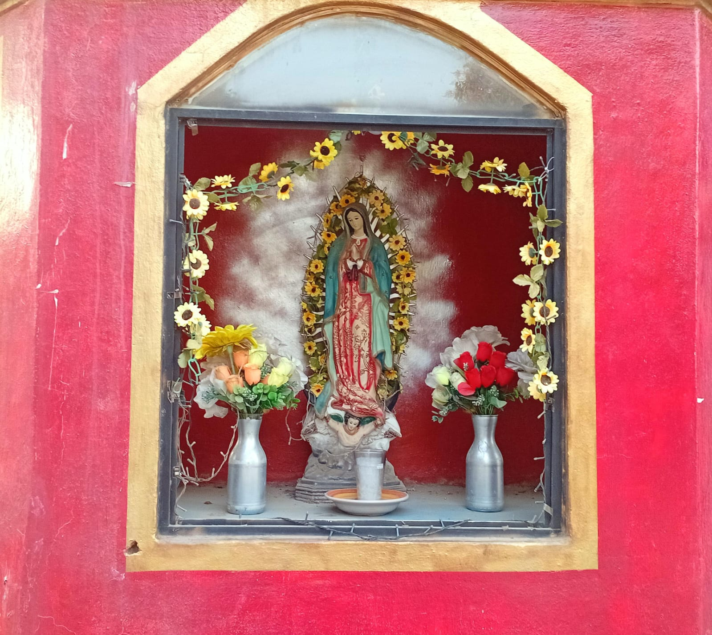
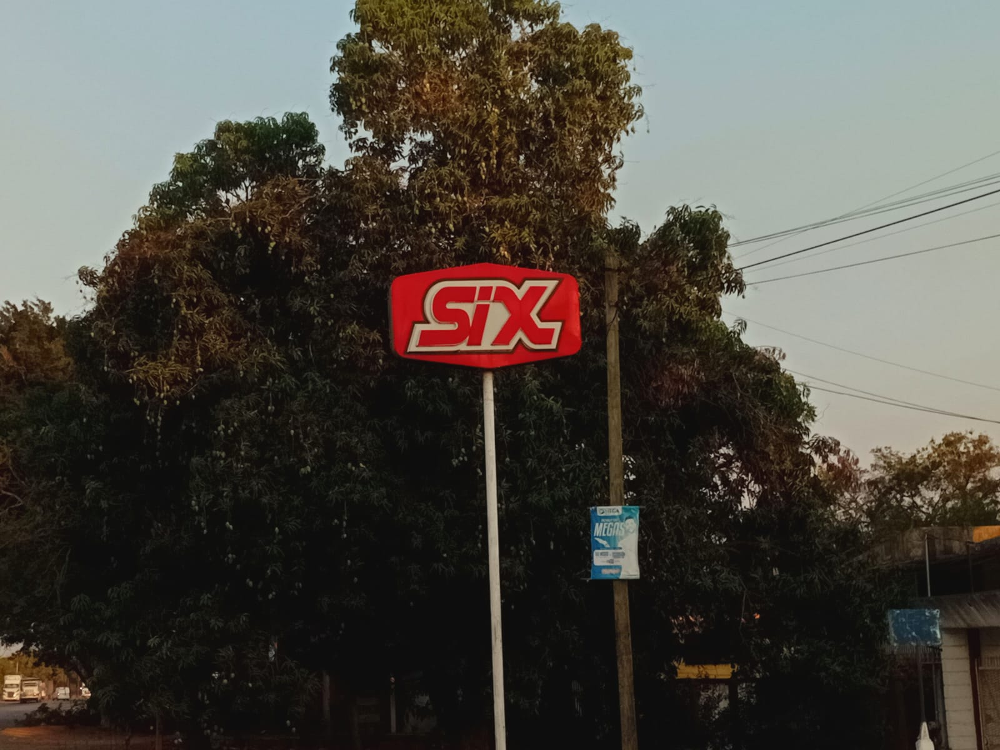

La comunidad de Novara alberga lugares interesantes, las cuales nos permiten estar tiempo en ellas, donde podemos disfrutar y deleitar de comida, bebidas, de nuestra religión, jugar, etc.
En este pequeño negocio podrás encontrar riquísimas hamburguesas, papas a la francesa y hot dogs, las cuales podrás disfrutar junto con tu familia o amigos, además cuenta con un ambiente cómodo, música y bebidas.

Esta panadería es la única del lugar y con los mejores panes. Cuentan con volovanes, panes de dulce, bolillos, cemitas, budín, entre muchas otras cosas por las que se te antojarán con solo sentir su aroma exquisito.

Este centro religioso católico, es importante para los que siguen y son devotos de esta, mencionando que la mayor parte de la población son católicos, los que asisten a orar, a misa, o solo a pasar un rato en el lugar.

Este pequeño espacio se encuentra sobre una calle, para que cuando vayas de paso o a un mandado, veas y recuerdes tu fe, tu religión o le pidas a la virgen alguna petición, aunque también la puedes ir a ver a su nicho cuando quieras a la hora que puedas.

Este pequeño espacio esta dedicado más que nada para que te deslindes un rato de preocupaciones, del trabajo o solo ir con los amigos a disfrutar de unas bebidas, paletas o cervezas, claro que todo con medida.

Algo más de Novara
Para consultarnos
Enviar correo electrónico